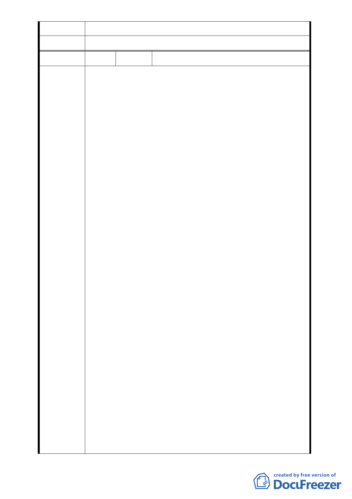

之變更和審議，請陳情民眾另循都市更新程序辦理。
委員會決議 同專案小組審查意見。
編 號 8 陳情人 魏春蓮
首先，對於陳情綜理表之編號6，第一項 : 說明人等係前揭
變更都市細部計畫範圍內之不動產所有權人，即土地權利關
係人，說明人對於合康工程顧問股份有限公司並無任何信
心，亦無意願參與以該公司擔任實施者之前揭都市更新案，
合先陳明。
在此補註：說明人(陳情人)等並非不參與都更，而是擔心及
反對合康公司擔任本案實施者，因事關不動產所有權人之權
利義務，請勿將此延續前因之意願陳明，作為不參與都更之
證明。合先陳明。
其實此案申請至今，已年有餘，對於未能贊成之住戶生活影
響，已經非常大 ( 處在有產權之房子會被拆除之壓力下 )
而來來往往函文陳情已不下數次，但關於我與家人以及在座
未能同意的住戶所關注的問題，我想在這裡，再一次重申，
也希望能獲得在場各位專家的幫助，
1、感謝市府規劃此案的美意，獎勵容積讓大家有意願更新住
屋
陳 情 理 由 2、對於合康公司擔任實施者未具信心，且未公平徵選招商
( 雖然徵選招商並非完全沒有缺點 )，但至少選擇權可以
合理公平的掌握在土地及合法建築物所有權人手上，也讓
流程之程序正義彰顯。
3、本區住屋多為4－6層公寓，住戶單純，土地持坪高，使用
坪數大 (公設低，幾乎零公設)，以台北市寸土寸金來說，
目前北市持土地坪高之住屋，對屋主來說本是重要資產，
本應珍惜及保護，這點是不容忽視之現況，也應幫住戶設
想。
4、此案更新開發，對於公環境來說，高樓熱、耗能、容積到
頂的國土永續問題周邊交通等等，都值得探討，我想在座
各位專家應是比我們更關心且有理想信念的嚴謹把關。對
於私領域來說，住戶以高持坪之土地，換取的未來實際使
用坪數 (扣除公設及附屬建物)/ 房屋坪數 / 土地持
分，皆非正面的選擇，(在數字上來看，分回坪數建商稱
合理，但對於實際使用坪以及稀釋後的土地持坪以及延續
性的使用費用 (例如管理費，對於原住戶是需要考慮的持
續性支出) 等等。
- 36 -